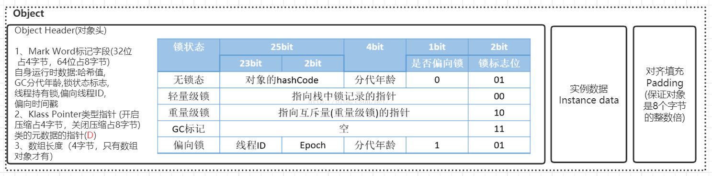

Oracke官方文档
对象的创建

类加载检测
虚拟机遇到一条new指令时，首先将去检查这个指令的参数是否能在常量池中定位到一个类的符号引用，并且检查这个符号引用代表的类是否已被加载、解析和初始化过。如果没有，那必须先执行相应的类加载过程。
触发条件：new关键词、对象克隆、对象序列化等。
分配内存
这个步骤有两个问题：
- 如何划分内存。
- 在并发情况下，可能出现正在给对象A分配内存，指针还没来得及修改，对象B又同时使用了原来的指针来分配内存的情况。
划分内存的方法：
- “指针碰撞”（Bump the Pointer）(默认用指针碰撞)
如果Java堆中内存是绝对规整的，所有用过的内存都放在一边，空闲的内存放在另一边，中间放着一个指针作为分界点的指示器，那所分配内存就仅仅是把那个指针向空闲空间那边挪动一段与对象大小相等的距离。 - “空闲列表”（Free List）
如果Java堆中的内存并不是规整的，已使用的内存和空闲的内存相互交错，那就没有办法简单地进行指针碰撞了，虚拟机就必须维护一个列表，记录上哪些内存块是可用的，在分配的时候从列表中找到一块足够大的空间划分给对象实例，并更新列表上的记录。
解决并发问题的方法：
- CAS（compare and swap）
虚拟机采用CAS配上失败重试的方式保证更新操作的原子性来对分配内存空间的动作进行同步处理。此方法会出现ABA的问题。 - 本地线程分配缓冲（Thread Local Allocation Buffer,TLAB）
把内存分配的动作按照线程划分在不同的空间之中进行，即每个线程在Java堆中预先分配一小块内存。
对象内存分配流程图

对象栈上分配
我们通过JVM内存分配可以知道JAVA中的对象都是在堆上进行分配，当对象没有被引用的时候，需要依靠GC进行回收内存，如果对象数量较多的时候，会给GC带来较大压力，也间接影响了应用的性能。为了减少临时对象在堆内分配的数量，JVM通过逃逸分析确定该对象不会被外部访问。如果不会逃逸可以将该对象在栈上分配内存，这样该对象所占用的内存空间就可以随栈帧出栈而销毁，就减轻了垃圾回收的压力。
对象逃逸分析：就是分析对象动态作用域，当一个对象在方法中被定义后，它可能被外部方法所引用，例如作为调用参数传递到其他地方中。
标量替换：通过逃逸分析确定该对象不会被外部访问，并且对象可以被进一步分解时，JVM不会创建该对象，而是将该对象成员变量分解若干个被这个方法使用的成员变量所代替，这些代替的成员变量在栈帧或寄存器上分配空间，这样就不会因为没有一大块连续空间导致对象内存不够分配。开启标量替换参数(-XX:+EliminateAllocations)，JDK7之后默认开启。
标量与聚合量：标量即不可被进一步分解的量，而JAVA的基本数据类型就是标量（如：int，long等基本数据类型以及reference类型等），标量的对立就是可以被进一步分解的量，而这种量称之为聚合量。而在JAVA中对象就是可以被进一步分解的聚合量。
对象在Eden区分配
大多数情况下，对象在新生代中 Eden 区分配。当 Eden 区没有足够空间进行分配时，虚拟机将发起一次Minor GC。我们来进行实际测试一下。
在测试之前我们先来看看 Minor GC和Full GC 有什么不同呢？
Minor GC/Young GC：指发生新生代的的垃圾收集动作，Minor GC非常频繁，回收速度一般也比较快。
Major GC/Full GC：一般会回收老年代 ，年轻代，方法区的垃圾，Major GC的速度一般会比Minor GC的慢10倍以上。
Eden与Survivor区默认8:1:1
设置对象头
在HotSpot虚拟机中，对象在内存中存储的布局可以分为3块区域：对象头（Header）、 实例数据（Instance Data）和对齐填充（Padding）。

执行方法
执行
为什么要进行指针压缩？
1.在64位平台的HotSpot中使用32位指针(实际存储用64位)，内存使用会多出1.5倍左右，使用较大指针在主内存和缓存之间移动数据，占用较大宽带，同时GC也会承受较大压力
2.为了减少64位平台下内存的消耗，启用指针压缩功能
3.在jvm中，32位地址最大支持4G内存(2的32次方)，可以通过对对象指针的存入堆内存时压缩编码、取出到cpu寄存器后解码方式进行优化(对象指针在堆中是32位，在寄存器中是35位，2的35次方=32G)，使得jvm只用32位地址就可以支持更大的内存配置(小于等于32G)
4.堆内存小于4G时，不需要启用指针压缩，jvm会直接去除高32位地址，即使用低虚拟地址空间
5.堆内存大于32G时，压缩指针会失效，会强制使用64位(即8字节)来对java对象寻址，这就会出现1的问题，所以堆内存不要大于32G为好
垃圾收集器
垃圾收集算法

- 分代收集理论：一般将java堆分为新生代和老年代，这样我们就可以根据各个年代的特点选择合适的垃圾收集算法。在新生代中，每次收集都会有大量对象(近99%)死去，所以可以选择复制算法，只需要付出少量对象的复制成本就可以完成每次垃圾收集。而老年代的对象存活几率是比较高的，而且没有额外的空间对它进行分配担保，所以我们必须选择“标记-清除”或“标记-整理”算法进行垃圾收集。注意，“标记-清除”或“标记-整理”算法会比复制算法慢10倍以上。
- 复制：为了解决效率问题，将内存按照容量划分为大小相等的两块，每次只使用其中的一块。当这块内存用完了，将还存活的对象复制到另一块上面，然后再把已使用过的内存空间一次清理掉，这样使得每次都对整个半区进行内存回收。
优点：实现简单，运行高效。
不足：代价高（将内存缩小为原来的一半） 标记-清除：首先标记出所有需要回收的对象，在标记完成后统一回收所有被标记的对象。
不足：- 效率问题，标记和清除两个过程的效率都不高。
- 空间问题，标记清除后会产生大量不连续的内存碎片。
标记-整理：首先标记出所有需要回收的对象，然后让所有存活的对象都向一端移动，直接清理掉端边界以外的内存。
进行full gc时会触发STW（Stop the World）。在对JVM进行调优时遵循以下规则：
尽可能让对象都在新生代里分配和回收，尽量别让太多对象频繁进入老年代，避免频繁对老年代进行垃圾回收，同时给系统充足的内存大小，避免新生代频繁的进行垃圾回收。
垃圾收集器

如果说收集算法是内存回收的方法论，那么垃圾收集器就是内存回收的具体实现。
ParNew和Parallel类似，区别在于它可以与CMS配合使用。
CMS收集器（-XX：+UseConcMarkSweepGC（old））
CMS(Concurrent Mark Sweep)收集器是一种以获取最短回收停顿时间为目标的收集器。它非常符合在注重用户体验的应用上使用，它是HotSpot虚拟机第一款真正意义上的并发收集器，它第一次实现了让垃圾收集线程与用户线程 (基本上)同时工作。
CMS收集器是一种 “标记-清除”算法实现的，它的运作过程相比于前面几种垃圾收集器来说更加复杂一些。整个过程分为四个步骤:
- 初始标记: 暂停所有的其他线程(STW)，并记录下gc roots直接能引用的对象，速度很快。
- 并发标记: 并发标记阶段就是从GC Roots的直接关联对象开始遍历整个对象图的过程，这个过程耗时较长但 是不需要停顿用户线程，可以与垃圾收集线程一起并发运行。因为用户程序继续运行，可能会有导致已经标记过的对象状态发生改变。
- 重新标记: 重新标记阶段就是为了修正并发标记期间因为用户程序继续运行而导致标记产生变动的那一部分对象的标记记录，这个阶段的停顿时间一般会比初始标记阶段的时间稍长，远远比并发标记阶段时间短。主要用到三 色标记里的增量更新算法(见下面详解)做重新标记。
- 并发清理: 开启用户线程，同时GC线程开始对未标记的区域做清扫。这个阶段如果有新增对象会被标记为黑 色不做任何处理(见下面三色标记算法详解)。
- 并发重置:重置本次GC过程中的标记数据。

主要优点:并发收集、低停顿。
明显的缺点:
- 对CPU资源敏感(会和服务抢资源);
- 无法处理浮动垃圾(在并发标记和并发清理阶段又产生垃圾，这种浮动垃圾只能等到下一次gc再清理了);
- 它使用的回收算法-“标记-清除”算法会导致收集结束时会有大量空间碎片产生，当然通过参数-XX: +UseCMSCompactAtFullCollection可以让jvm在执行完标记清除后再做整理；
- 执行过程中的不确定性，会存在上一次垃圾回收还没执行完，然后垃圾回收又被触发的情况，特别是在并发标记和并发清理阶段会出现，一边回收，系统一边运行，也许没回收完就再次触发full gc，也就是"concurrent mode failure"，此时会进入stop the world，用serial old垃圾收集器来回收。
三色标记
在并发标记的过程中，因为标记期间应用线程还在继续跑，对象间的引用可能发生变化，多标和漏标的情况就有可能发生。 这里我们引入“三色标记”来给大家解释下，把Gcroots可达性分析遍历对象过程中遇到的对象， 按照“是否访问过”这个条件标记成以 下三种颜色:
- 黑色: 表示对象已经被垃圾收集器访问过， 且这个对象的所有引用都已经扫描过。 黑色的对象代表已经扫描 过， 它是安全存活的， 如果有其他对象引用指向了黑色对象， 无须重新扫描一遍。 黑色对象不可能直接(不经过 灰色对象) 指向某个白色对象。
- 灰色: 表示对象已经被垃圾收集器访问过， 但这个对象上至少存在一个引用还没有被扫描过。
- 白色: 表示对象尚未被垃圾收集器访问过。 显然在可达性分析刚刚开始的阶段， 所有的对象都是白色的， 若 在分析结束的阶段， 仍然是白色的对象， 即代表不可达。
多标-浮动垃圾
在并发标记过程中，如果由于方法运行结束导致部分局部变量(gcroot)被销毁，这个gcroot引用的对象之前又被扫描过 (被标记为非垃圾对象)，那么本轮GC不会回收这部分内存。这部分本应该回收但是没有回收到的内存，被称之为“浮动 垃圾”。浮动垃圾并不会影响垃圾回收的正确性，只是需要等到下一轮垃圾回收中才被清除。 另外，针对并发标记(还有并发清理)开始后产生的新对象，通常的做法是直接全部当成黑色，本轮不会进行清除。这部分 对象期间可能也会变为垃圾，这也算是浮动垃圾的一部分。
漏标-读写屏障
漏标会导致被引用的对象被当成垃圾误删除，这是严重bug，必须解决，有两种解决方案: 增量更新(Incremental Update) 和原始快照(Snapshot At The Beginning，SATB) 。 增量更新就是当黑色对象插入新的指向白色对象的引用关系时， 就将这个新插入的引用记录下来， 等并发扫描结束之 后， 再将这些记录过的引用关系中的黑色对象为根， 重新扫描一次。 这可以简化理解为， 黑色对象一旦新插入了指向 白色对象的引用之后， 它就变回灰色对象了。
原始快照就是当灰色对象要删除指向白色对象的引用关系时， 就将这个要删除的引用记录下来， 在并发扫描结束之后， 再将这些记录过的引用关系中的灰色对象为根， 重新扫描一次，这样就能扫描到白色的对象，将白色对象直接标记为黑 色(目的就是让这种对象在本轮gc清理中能存活下来，待下一轮gc的时候重新扫描，这个对象也有可能是浮动垃圾) 以上无论是对引用关系记录的插入还是删除， 虚拟机的记录操作都是通过写屏障实现的。
对于读写屏障，以Java HotSpot VM为例，其并发标记时对漏标的处理方案如下:
CMS:写屏障 + 增量更新
G1，Shenandoah:写屏障 + SATB
ZGC:读屏障
为什么G1用SATB?CMS用增量更新?
SATB相对增量更新效率会高(当然SATB可能造成更多的浮动垃圾)，因为不需要在重新标记阶段再次深度扫描 被删除引用对象，而CMS对增量引用的根对象会做深度扫描，G1因为很多对象都位于不同的region，CMS就一块老年代 区域，重新深度扫描对象的话G1的代价会比CMS高，所以G1选择SATB不深度扫描对象，只是简单标记，等到下一轮GC 再深度扫描。